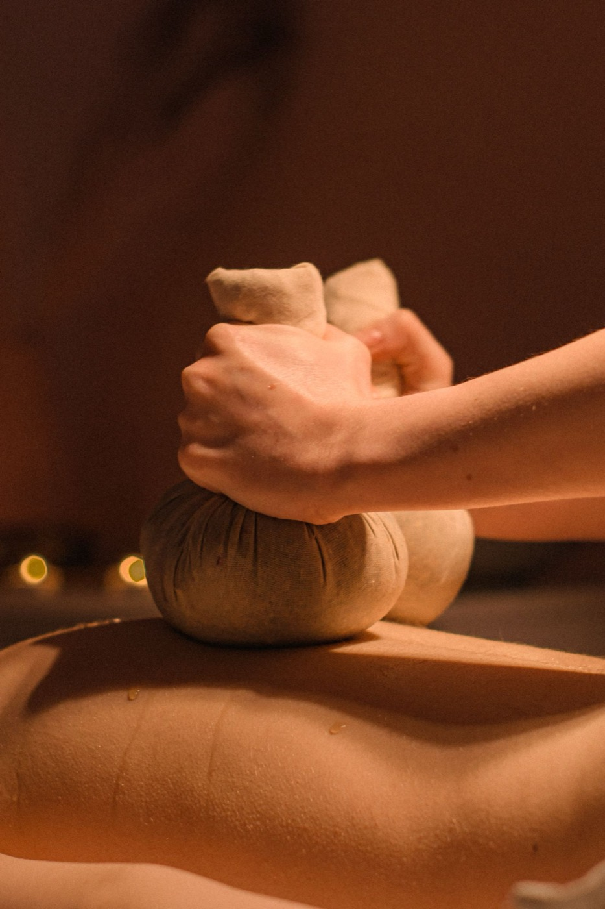
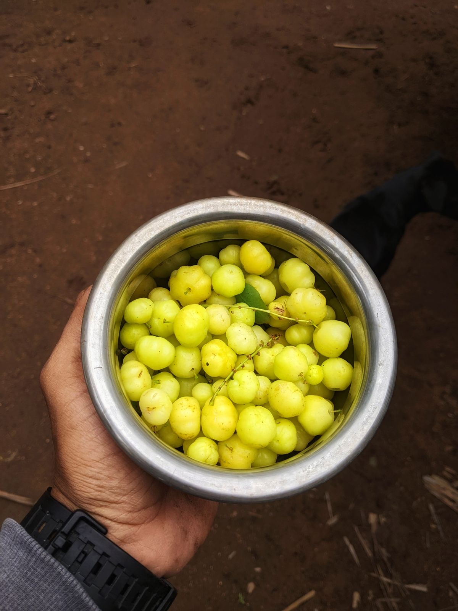
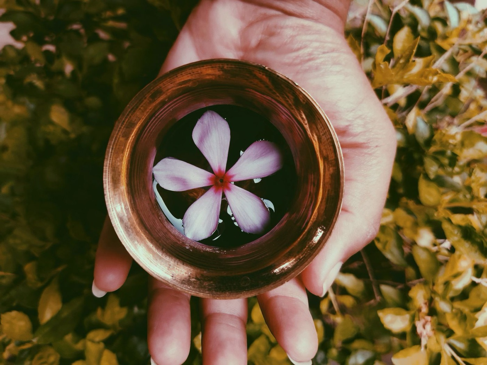
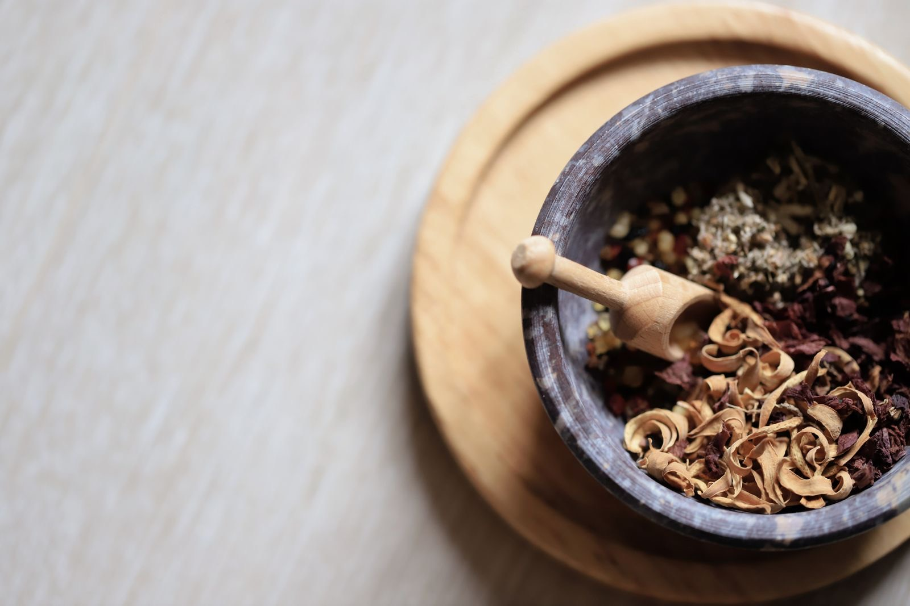
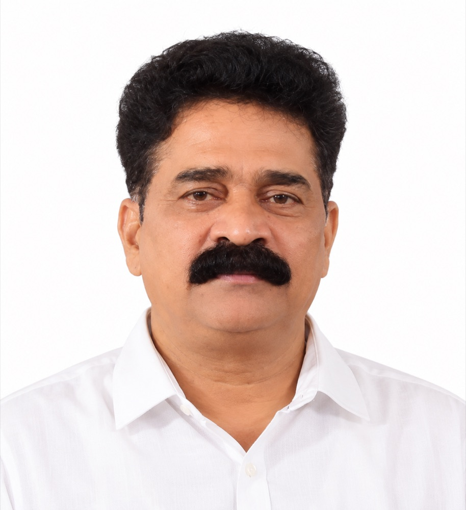
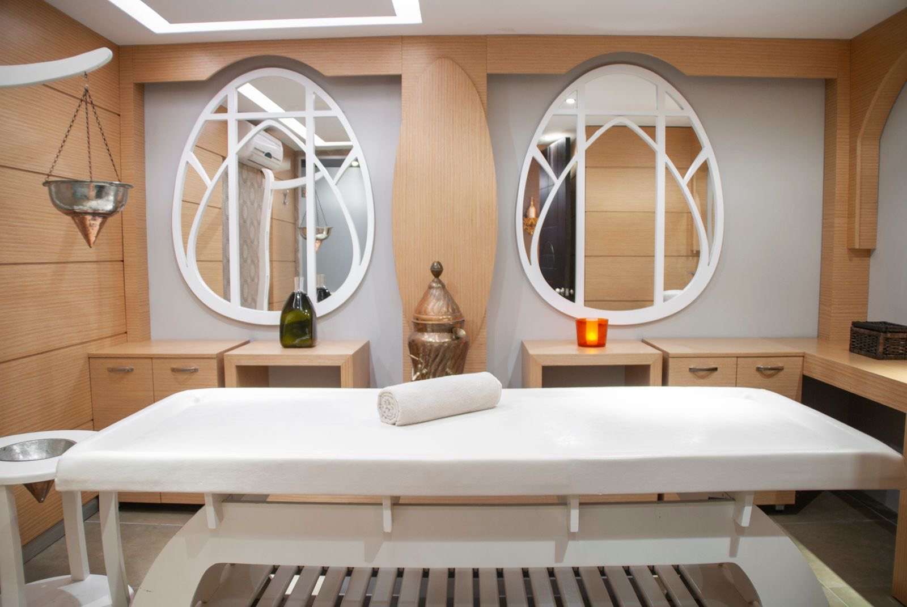
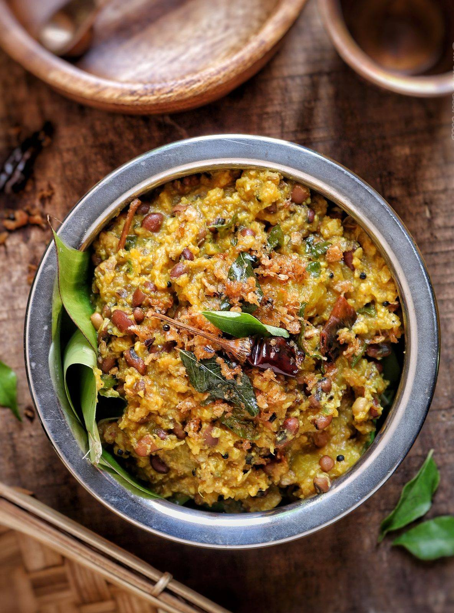
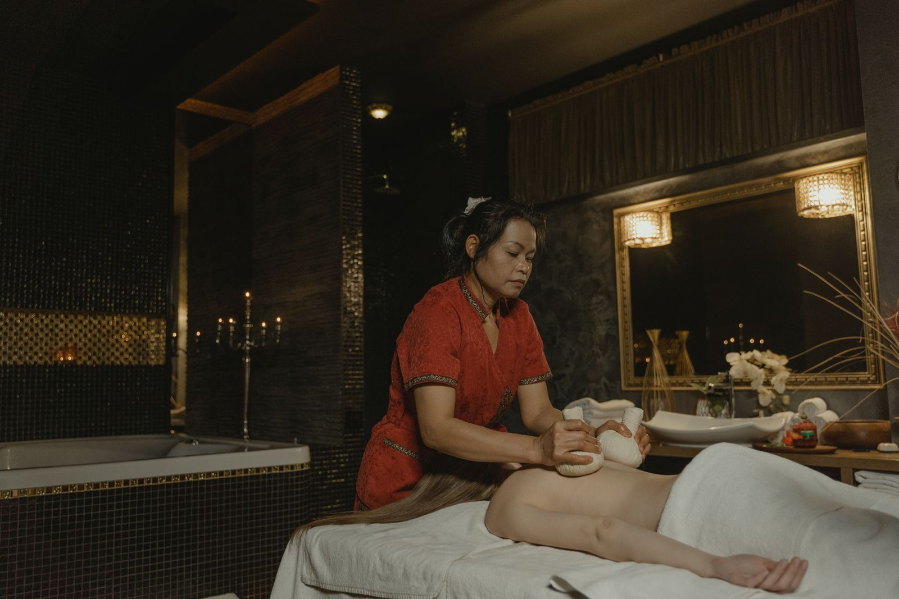

15+ years of practice. One hospital built to go deeper.
A dedicated Ayurveda hospital in Kalpetta, Wayanad — built for complete, unhurried Panchakarma care.
Our story
Our Kalpetta hospital — built to be different.


Kerala Sun Matha Ayurveda Hospital & Spa is where Sun Matha grew from clinics into a dedicated hospital.
Rather than simply opening another branch, this Kalpetta facility was built specifically to deliver high-quality, affordable care in a more complete, comfortable healing environment — with the space, staff and facilities that a full course of Panchakarma treatment deserves.
It carries forward everything the Sun Matha name stands for: classical technique, unhurried care, and results patients can feel.
Vaithiyar Sunny begins practising traditional Ayurvedic medicine in Kerala — classical methods, learned and practised the old way.
The practice grows to 3 Sun Matha centres, each carrying forward the same treatments and the same standard of care.
Kalpetta, Wayanad becomes home to our dedicated hospital with the rooms, staff and space for a full course of Panchakarma.
Our philosophy
Ancient technique, contemporary comfort.

Our approach combines time-tested Ayurvedic methods with real attention to the patient's day-to-day comfort — results-driven care delivered in a warm, supportive setting.
We treat both the physical condition and the mental and emotional strain that so often comes with it. Every programme is guided by holistic, proven therapeutic approaches rather than a fixed template — shaped around the individual, not just the diagnosis.
Body
Classical therapies chosen and sequenced for your condition.
Mind
Care for the stress and strain that comes with long illness.
Food
Organic vegetarian meals as part of the treatment itself.

Leadership
The people guiding your care.

Vaithiyar Sunny
Founder & Chief Physician
Over 15 years ago, Vaithiyar Sunny began practising traditional Ayurvedic medicine in Kerala. That single practice has since grown to 3 Sun Matha centres, each carrying forward the same classical methods he trained in. The Kalpetta hospital is his most complete expression of that work — a dedicated space to treat patients fully, not just briefly.
Dr. Vinod Lal
Doctor, Kalpetta Hospital
Dr. Vinod Lal is the doctor at the Kalpetta hospital. He meets every patient at consultation, builds their treatment plan with the therapy team, and follows their progress day by day through the stay.

The facility
Built for a full course of treatment, not a quick visit.
The hospital is designed around complete Panchakarma programmes — consultation, treatment and recovery all under one roof, with the capacity to care for multiple patients at once without compromising privacy or attention.
Private consultation rooms
Female therapists and separate rooms for women
In-house Ayurvedic pharmacy
Dedicated Panchakarma treatment theatres
Dedicated kitchen for patient meals
Private in-house accommodation
On-site parking

Food & diet
Healing food, grown at home.
Meals are organic and fully vegetarian, prepared using home-grown produce — an extension of the treatment itself, not an afterthought. Diet is treated as part of the Ayurvedic programme, supporting the body's healing naturally alongside each therapy.
Daily meals are prepared this way and served alongside your therapy schedule.

Come see the hospital for yourself.
We welcome enquiries from patients in Kerala, across India, and abroad.